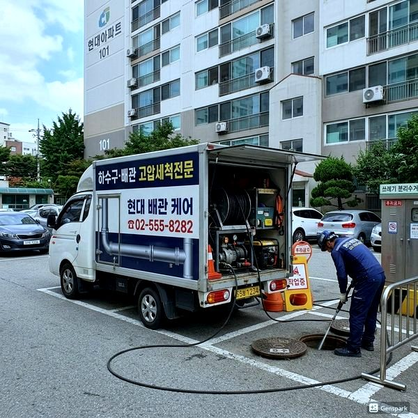
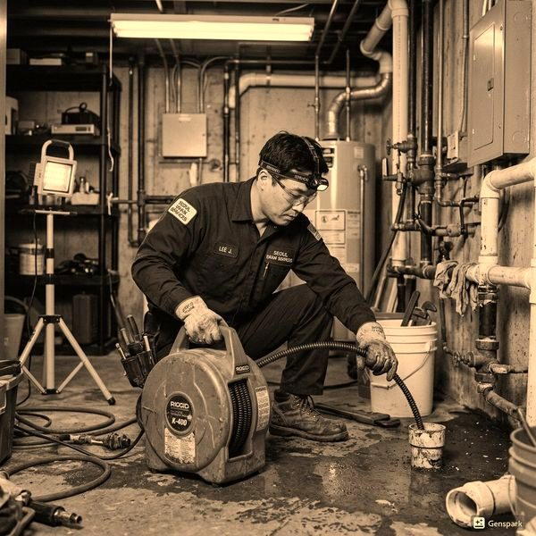
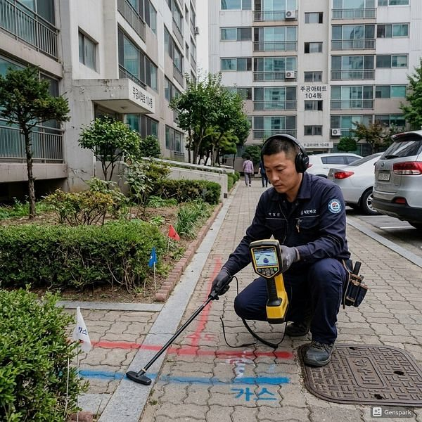

화장실 리모델링 시 배관 교체 체크리스트
2026년 4월 12일 | 제우스시설관리
화장실 리모델링은 타일과 위생도기만 바꾸는 것이 아닙니다. 벽과 바닥을 뜯어내는 기회에 배관 상태를 반드시 점검하고 필요하면 교체해야 합니다. 배관을 그대로 두고 리모델링하면, 몇 년 후 다시 뜯어내야 하는 최악의 상황이 올 수 있습니다.

리모델링 시 확인할 배관 항목: 급수관(냉수/온수), 배수관(오수관), 환기관, 방수층. 15년 이상 된 아연도금강관(백관)은 반드시 교체하세요. 현재 표준은 스테인리스관이나 PB관으로, 내식성과 내구성이 우수합니다.
특히 배수관 구배(경사)가 중요합니다. 리모델링 시 변기나 세면대 위치를 변경하면 배수관 경사도가 달라집니다. 적정 구배(1/50~1/100)를 확보하지 못하면 배수 불량과 역류의 원인이 됩니다. 전문가의 설계가 필요한 부분입니다.

방수층도 리모델링의 핵심입니다. 기존 방수층을 제거하고 새로 시공해야 하며, 바닥뿐 아니라 벽면 30cm 이상까지 방수 처리해야 합니다. 방수 테스트(물을 담아 24시간 확인)는 필수입니다.

제우스시설관리는 리모델링 전 내시경 카메라와 관로탐지기로 기존 배관 상태를 정밀 진단합니다. 교체가 필요한 구간만 정확히 파악하여 불필요한 비용을 줄여드립니다. 무료 현장 진단 예약: 010-4406-1788